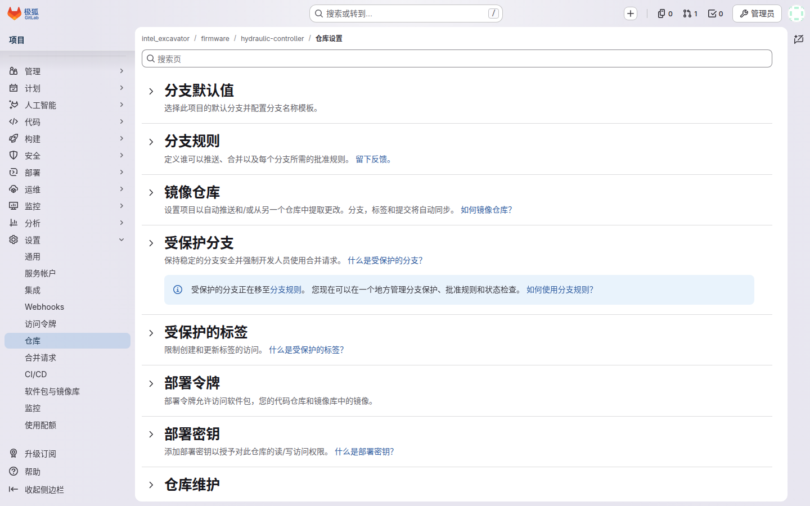
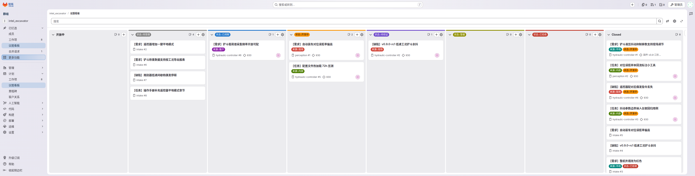

你是谁
你是拿着顶层组 intel_excavator 的项目负责人，在 GitLab 里是顶层组 Owner。运维把实例和顶层组建好、把你设为 Owner 之后，组树之下都归你：建子组与仓库、配保护分支与看板、授权变更、里程碑。与运维（root / 实例管理员）的边界——你治组树，不碰实例（起栈、改 compose、DB 直改、开号封禁都是运维的事，见 ops.html）。若你兼平台维护人（现阶段常态），实例侧另读 ops.html；CI 宪法由 platform 组维护，见 platform.html。
你能做什么 / 不能做什么
| 能 ✅ | 不能 ❌ |
|---|---|
| 建子组与仓库、配保护分支、配组看板 | 起栈、改 compose、DB 直改（运维） |
| 授权变更（Owner token）、里程碑命名归组 | root 改密、开号封禁（运维） |
| 需求流收口配置（intake / 标签 / 看板） | 改 CI 宪法模板（走 platform 组 MR）、直接 push main |
治理主线：搭起组树
运维建好顶层组、把你设为 Owner 后，按下述五步把组树搭起来。本章教通用做法——组树、仓库、角色是设计产出，各项目按自己的产品域落地；原型环境的具体取值（组名、用户、MR 编号）只是示例。
建组树
顶层组 = 项目，子组 = 产品域（团队会重组、产品域相对稳定）：firmware / autonomy / vehicle / cloud / app / platform，子组内按组件建仓库。platform/ 是宪法组——CI 模板与规范文档全部版本化，规则修改必须走 MR，不允许口头变更。
- UI：新建组 → 填路径与可见性（内部）；或 API
POST /api/v4/groups（你的 Owner token 即可建子组），批量建组树好用。

配权限
账号由运维开通（关注册后的唯一入口，见 ops.html §6.1），建号后由你按三级授权：
| 角色 | 权限 | 授予对象 |
|---|---|---|
| Guest / Reporter | 只读 | 跨组查阅者、外部协作者 |
| Developer | push 分支、建 MR | 本组开发成员 |
| Maintainer | 合 MR、管保护分支 | 每仓库 1–2 名 Owner |
顶层组 Owner 由项目负责人持有。免费版无审计能力，授权变更一律经 API 并留存脚本日志（唯一留痕）。账号 ≠ 权限——运维开号只给一个能登录的身份，能干什么由你授权。
建仓与保护分支
子组内建仓（firmware/hydraulic-controller 一类），每仓指定一名明确 Owner。分支 trunk-based 简化版：main 常绿 + 短命特性分支 + MR 合入；保护分支禁直接 push；发布周期长的仓库可留 release/x.y 维护分支。
存量代码入库门槛：能编译、README 写明用途 / Owner / 依赖——用途说不清的代码不入库。

需求流与看板
- 建收口仓库（示例名
intake）承接需求与现场问题进池，标签体系分诊、里程碑归组，跨仓单据转移走 GitLab 原生 transfer。 - 组看板配状态列（设计为六状态）。坑位：组看板懒创建，配置前须先浏览器访问过看板页。

提单与追进度见 submitter.html；域级分诊（移交 / 打回 / 婉拒）由各域 Owner 担任，见 owner.html。
CI 宪法（指针）
platform/ci-templates 是全项目的宪法仓库，由 platform 组 Maintainer 维护（建模板与修订走 MR，见 platform.html）。你的责任是确保下游各仓库的 .gitlab-ci.yml 以 include: project: 引用通用层——未 include 通用层的流水线 MR 不予合入：检查 job 校验 + Maintainer 人工拒合，双重实现。
持续治理
组树搭起来之后是长期治理，以下动作没有终点：
- 授权变更走 API 并留存脚本日志——免费版无审计能力，脚本是唯一留痕。
- 新产品域 = 新子组：按产品域建组，团队重组不动组树。
- 里程碑命名如「固件 v2.3·2026Q4」，版本节点跨仓库生效、进度按单数百分比看。

红线清单
延伸阅读
- 运维侧（建实例 + 建顶层组 + 授权 Owner）—— ops.html
- CI 宪法与模板维护 —— platform.html
- 域级分诊与发布 —— owner.html；提单与看板追进度 —— submitter.html